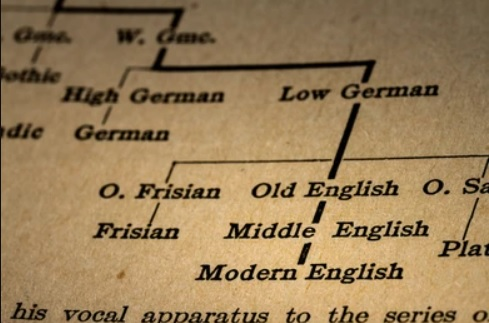
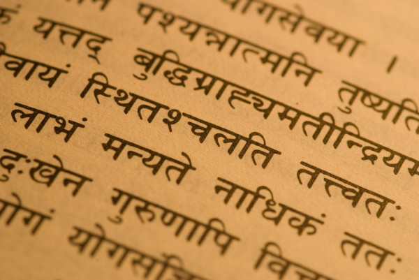
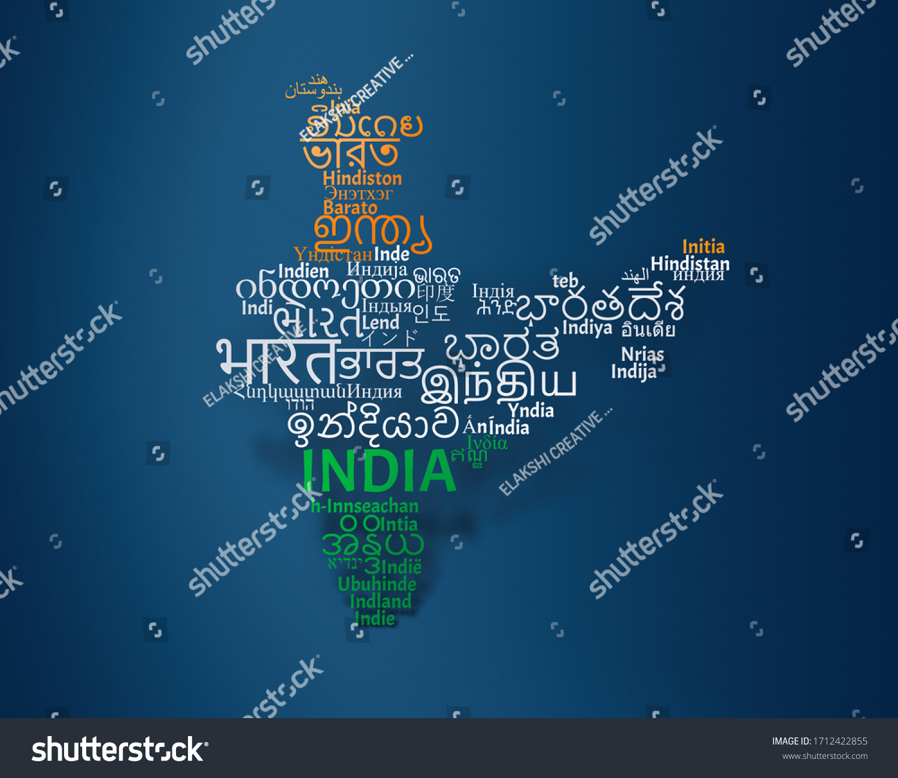

Humanities embraces an understanding of philosophical beliefs, literatures, history of ancient and modern cultures and languages. The faculty encompasses disciplines of Sanskrit, the mother language of Indic family of languages, and Hindi along with Vedic Studies, Philosophy and Modern European Languages- English, German, French and Italian. These disciplines seek to engage students in analytical, critical thinking and creative use of all forms of information, languages and communication. There is a constant endeavor to discover innovative answers to fundamental human questions, puzzles and dilemmas and to integrate rational and intuitive knowledge of complex world.
|  | The Department of English and MEL runs regular courses in English, French and German. Need based certificate courses in conversational English, German, French and Spanish are also part of the academic programmes of the department. It came into being in 1943 with the introduction of B.A in English. The department started M.A. in English in 1963 and M.Phil.(ELT), still a rare course, in 1987. The doctoral work is performed both in literature and language. The department functions on an interdisciplinary approach and caters to the needs of scholars interested in the areas of Indian Literature, American Literature and Sanskrit Aesthetics. Modern European languages (French and German) are very popular among students. A fully equipped language laboratory fulfills the demands of autonomous learning of language. |
|---|
|
This department started functioning in 1943 with Bachelor's programmes. The postgraduate programmes were introduced after 1957. The department had such eminent scholars as Pt. Jaydevdev Vidyalankar, Shri Ramchandra Vaman Kumbhre, Prof. Praveen Chandra Jain, Pt. Jagdish Chandra Sharma, Prof. Ramesh Chandra Shastri, Prof. Shyama Bhatnagar, Prof. Chandra Kishore Goswami and Dr. Kusumlata Arya. They enriched the department with the great breadth of their learning and the depth of intense specialization. Their creative research made an impact upon the community of scholars and their high level of sustained efforts nourished the intellectual life inspired by their association with the faculties of other Universities. |
 |
|---|
|  | The Department of Hindi and Modern Indian Languages is one of the oldest departments of Banasthali. The mission of the department is to provide aesthetic, practical and moral education to the students by means of literature and language. The department in addition to offering Hindi as a foundation course or an elective course at bachelor's level and postgraduate level also assists in developing communication skills and in personality development by organizing seminars, workshops , debates and lecture and gives a platform to the research students aspiring for excellence. |
|---|